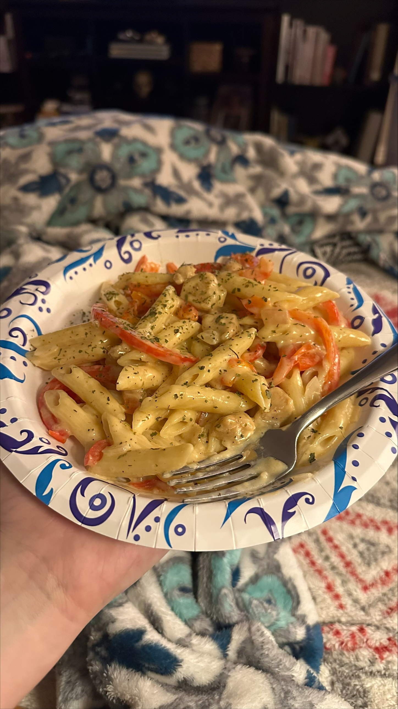

Savannah's Cajun Chicken Pasta

Description
Creamy Cajun Chicken Pasta with Penne and Red Peppers
Ingredients
- 1 boneless, skinless chicken breasts, cut into bite-sized pieces
- 2 tablespoons Cajun seasoning
- 2 tablespoons olive oil
- 2 red bell pepper, thinly sliced
- 1 onion, finely chopped
- 3 cloves garlic, minced
- 1 cup chicken broth
- 1 cup heavy cream
- 8 oz penne pasta
- Salt and pepper, to taste
- Fresh parsley, chopped (for garnish)
- Grated Parmesan cheese (optional)
Steps
- **Season the Chicken:** In a bowl, toss the chicken pieces with Cajun seasoning until they are well coated.
- **Cook the Chicken:** Heat olive oil in a large skillet over medium heat. Add the seasoned chicken and cook until browned and cooked through. Remove the chicken from the skillet and set aside.
- **Sauté Vegetables:** In the same skillet, add a bit more oil if needed. Sauté the red bell pepper, onion, and garlic until they are soft and fragrant.
- **Cook the Pasta:** While the vegetables are cooking, bring a large pot of salted water to a boil. Cook the penne pasta according to package instructions until al dente. Drain and set aside.
- **Create the Sauce:** Add the chicken broth to the skillet with the vegetables, scraping up any browned bits from the bottom of the pan. Stir in the heavy cream and bring to a simmer.
- **Combine:** Return the cooked chicken to the skillet. Let it simmer for a few minutes until the sauce starts to thicken. Taste and adjust seasoning with salt and pepper.
- **Mix with Pasta:** Add the cooked penne pasta to the skillet and toss everything together until the pasta is well coated with the creamy sauce.
- **Serve:** Garnish with chopped fresh parsley and grated Parmesan cheese, if desired.
- Enjoy your Creamy Cajun Chicken Pasta! This dish is packed with flavor and perfect for a cozy dinner.